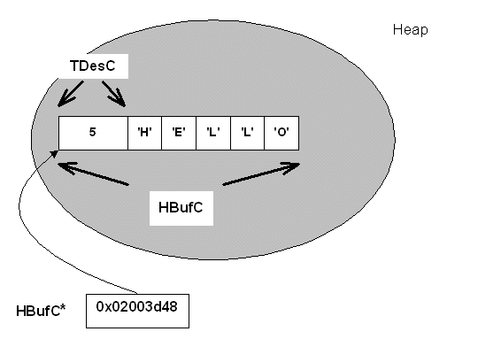

|
| |
A heap descriptor provides a fixed length buffer, allocated on the heap, to contain and access data. The data is part of the descriptor object.
The data contained in a heap descriptor can be accessed, but not changed, through this descriptor. The data can, however, be completely replaced using the assignment operators.
A heap descriptor also has the important property that it can be made larger or smaller, changing the size of the descriptor's buffer. This is achieved by reallocating the descriptor. Unlike the behaviour of dynamic buffers, reallocation is not done automatically.
Data is accessed through functions provided by the base class.
A heap descriptor is supplied in two variants:
the 16 bit variant, a HBufC16, to contain Unicode strings.
the 8 bit variant, a HBufC8, to contain non-Unicode strings and binary data.
There is also a build independent type, HBufC. This is the type which is most commonly used in program code; the appropriate variant is selected at build time.
An explicit 8 bit variant is chosen for binary data. An explicit 16 bit variant is rarely used.
The base class, TDesC, contains a data member which holds the length of the data., The following drawing shows the layout of a HBufC object initialised with the string of five characters representing the English word "Hello". The descriptor object is allocated on the heap.

Copyright ©2002 Symbian Ltd. 6.1-00174 |
|